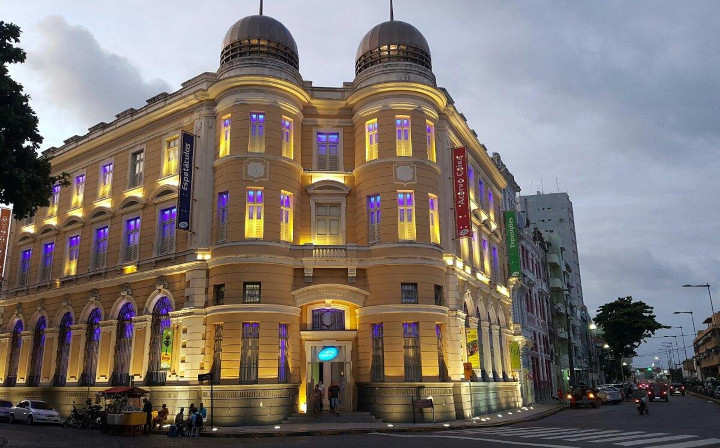
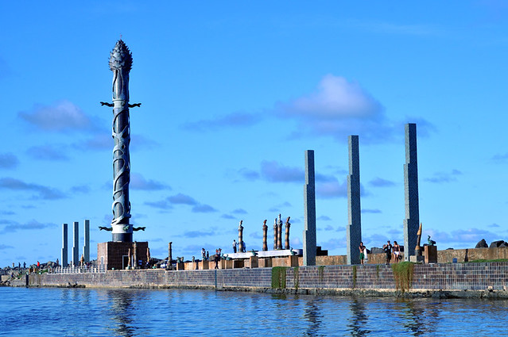

Home
Home
Pontos turísticos
Caixa cultural Recife
É um belo exemplar de arquitetura eclética do início do século XX. Abrigou durante muito tempo a bolsa de valores dos estados de Pernambuco e Paraíba. Recentemente passou por processo de restauração, e hoje abriga a Caixa Cultural.
Parque das esculturas Francisco Brennand
Parque de Esculturas é composto por obras do artista plástico Francisco Brennand, e foi inaugurado como comemoração dos 500 anos de descobrimento do Brasil. Foi instalado sobre o molhe do porto. Tartarugas, pelicanos, ovos, maçarico, pássaros roca e sentinela guardam a principal obra do parque, a torre de cristal, inspirada em uma flor descoberta pelo paisagista Roberto Burle Marx. A travessia do Marco Zero até o parque funciona diariamente, das 7h às 17h.